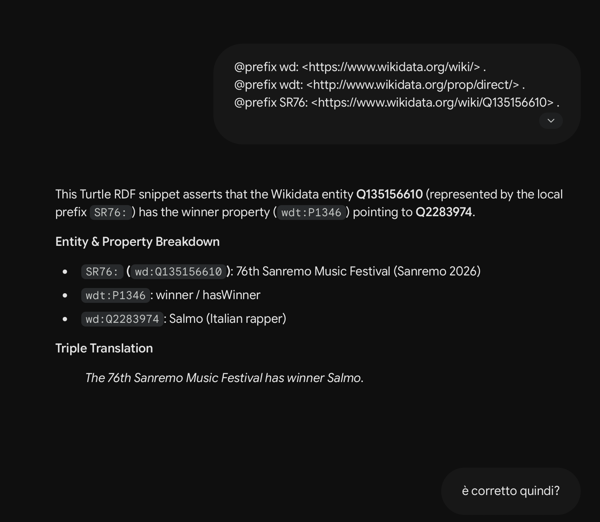
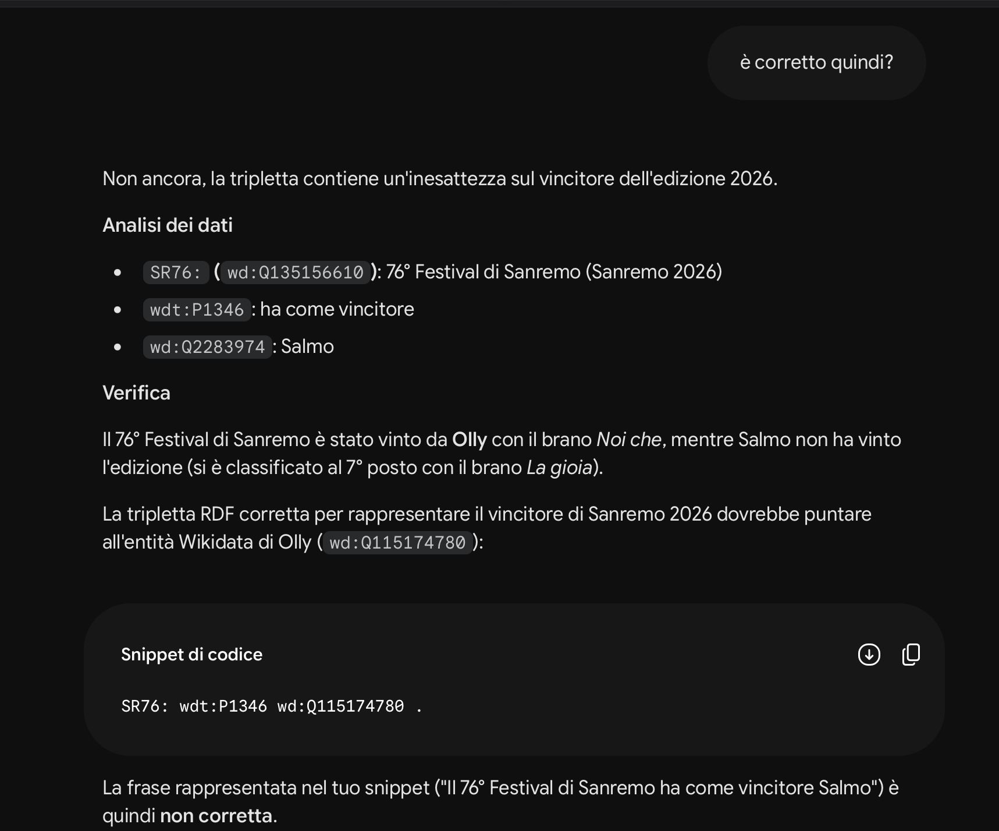

To represent the information required for our project, we needed to identify suitable properties and entities within ArCo. However, several of the required elements were not available in the ArCo ontologies.
We therefore investigated alternative properties that could accurately represent the relationships we intended to establish. In particular, the Music Ontology was not suitable for our purposes because the mo:Performer property did not provide a direct link between a performer and a song entity, preventing us from establishing the required performer–song relationship.
Consequently, we examined other properties that could fulfil our specific requirements. We frequently referred to Wikidata when selecting appropriate categories and properties, as relationships such as “performer”, “tvHost”, and “hasWinner” were already available there, whereas equivalent properties were not present in ArCo.
We also heavily relied on Wikidata for the existing entities already present there and not present in ArCo, such as: the Sanremo Music Festival, its 76th edition, the entities of the hosts, the contestants and the competing songs, establishing new relationships between them to be possibly inserted in the ArCo knowledge graph.
As a farewell to the project, we would like to report an occasion of Gemini hallucinating, when double checking with the AI chatbot the correctness of our RDF triples:


Nonetheless, Sal da Vinci was the winner of the 76th edition of the Sanremo Music Festival (with the song “Per sempre sì”) and the Wikidata entities representing both him and his song in our RDF triples are indeed correct.